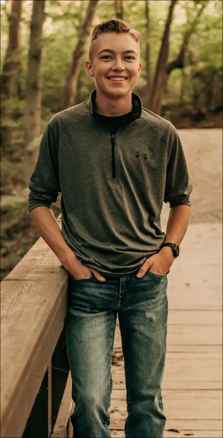

I am Cooper Pflaum. I am a first-year Cybersecurity major at the University of Cincinnati. I find myself drawn to the intricate world of low-level coding and the fascinating realm of computer hardware and software security. The thrill of unraveling complex systems and protecting them from potential threats is what drives my academic pursuits.
I am originally from Delaware, Ohio and lived there all my life. My journey through life has been marked by a love for the great outdoors with a particular fondness for camping which culminated in my achievement of the rank of Eagle Scout in 2021.
I hope to get the most at the University of Cincinnati by collaborating with peers and building meaningful relationships that can continue to help me grow as both an individual and a worker
